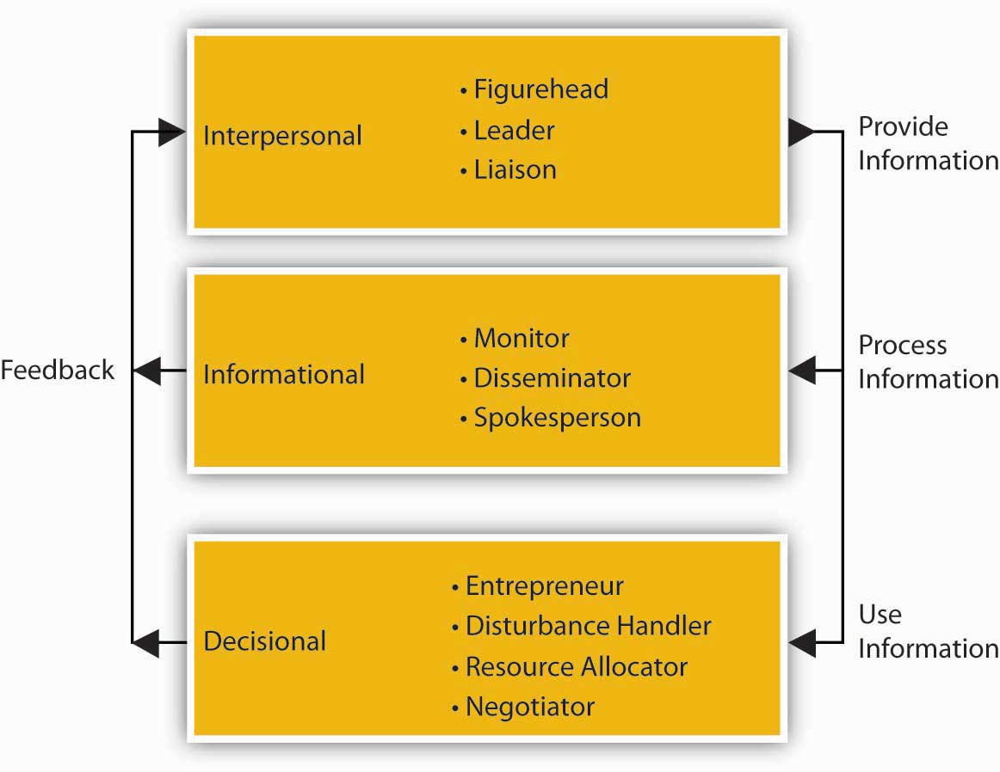

We tend to think about managers based on their position in an organization. This tells us a bit about their role and the nature of their responsibilities. The following figure summarizes the historic and contemporary views of organizations with respect to managerial roles.S. Ghoshal and C. Bartlett, The Individualized Corporation: A Fundamentally New Approach to Management (New York: Collins Business, 1999). In contrast to the traditional, hierarchical relationship among layers of management and managers and employees, in the contemporary view, top managers support and serve other managers and employees (through a process called empowerment), just as the organization ultimately exists to serve its customers and clients. Empowerment The process of enabling or authorizing an individual to think, behave, take action, and control work and decision making in autonomous ways. is the process of enabling or authorizing an individual to think, behave, take action, and control work and decision making in autonomous ways.
In both the traditional and contemporary views of management, however, there remains the need for different types of managers. Top managers are responsible for developing the organization’s strategy and being a steward for its vision and mission. A second set of managers includes functional, team, and general managers. Functional managers are responsible for the efficiency and effectiveness of an area, such as accounting or marketing. Supervisory or team managers are responsible for coordinating a subgroup of a particular function or a team composed of members from different parts of the organization. Sometimes you will hear distinctions made between line and staff managers.
A line manager leads a function that contributes directly to the products or services the organization creates. For example, a line manager (often called a product, or service manager) at Procter & Gamble (P&G) is responsible for the production, marketing, and profitability of the Tide detergent product line. A staff manager, in contrast, leads a function that creates indirect inputs. For example, finance and accounting are critical organizational functions but do not typically provide an input into the final product or service a customer buys, such as a box of Tide detergent. Instead, they serve a supporting role. A project manager has the responsibility for the planning, execution, and closing of any project. Project managers are often found in construction, architecture, consulting, computer networking, telecommunications, or software development.
A general manager is someone who is responsible for managing a clearly identifiable revenue-producing unit, such as a store, business unit, or product line. General managers typically must make decisions across different functions and have rewards tied to the performance of the entire unit (i.e., store, business unit, product line, etc.). General managers take direction from their top executives. They must first understand the executives’ overall plan for the company. Then they set specific goals for their own departments to fit in with the plan. The general manager of production, for example, might have to increase certain product lines and phase out others. General managers must describe their goals clearly to their support staff. The supervisory managers see that the goals are met.
Figure 1.4 The Changing Roles of Management and Managers

Managers are responsible for the processes of getting activities completed efficiently with and through other people and setting and achieving the firm’s goals through the execution of four basic management functions: planning, organizing, leading, and controlling. Both sets of processes utilize human, financial, and material resources.
Of course, some managers are better than others at accomplishing this! There have been a number of studies on what managers actually do, the most famous of those conducted by Professor Henry Mintzberg in the early 1970s.H. Mintzberg, The Nature of Managerial Work (New York: Harper & Row, 1973). One explanation for Mintzberg’s enduring influence is perhaps that the nature of managerial work has changed very little since that time, aside from the shift to an empowered relationship between top managers and other managers and employees, and obvious changes in technology, and the exponential increase in information overload.
After following managers around for several weeks, Mintzberg concluded that, to meet the many demands of performing their functions, managers assume multiple roles. A role is an organized set of behaviors, and Mintzberg identified 10 roles common to the work of all managers. As summarized in the following figure, the 10 roles are divided into three groups: interpersonal, informational, and decisional. The informational roles link all managerial work together. The interpersonal roles ensure that information is provided. The decisional roles make significant use of the information. The performance of managerial roles and the requirements of these roles can be played at different times by the same manager and to different degrees, depending on the level and function of management. The 10 roles are described individually, but they form an integrated whole.
The three interpersonal roles are primarily concerned with interpersonal relationships. In the figurehead role, the manager represents the organization in all matters of formality. The top-level manager represents the company legally and socially to those outside of the organization. The supervisor represents the work group to higher management and higher management to the work group. In the liaison role, the manager interacts with peers and people outside the organization. The top-level manager uses the liaison role to gain favors and information, while the supervisor uses it to maintain the routine flow of work. The leader role defines the relationships between the manager and employees.
Figure 1.5 Ten Managerial Roles
The direct relationships with people in the interpersonal roles place the manager in a unique position to get information. Thus, the three informational roles are primarily concerned with the information aspects of managerial work. In the monitor role, the manager receives and collects information. In the role of disseminator, the manager transmits special information into the organization. The top-level manager receives and transmits more information from people outside the organization than the supervisor. In the role of spokesperson, the manager disseminates the organization’s information into its environment. Thus, the top-level manager is seen as an industry expert, while the supervisor is seen as a unit or departmental expert.
The unique access to information places the manager at the center of organizational decision making. There are four decisional roles managers play. In the entrepreneur role, the manager initiates change. In the disturbance handler role, the manager deals with threats to the organization. In the resource allocator role, the manager chooses where the organization will expend its efforts. In the negotiator role, the manager negotiates on behalf of the organization. The top-level manager makes the decisions about the organization as a whole, while the supervisor makes decisions about his or her particular work unit.
The supervisor performs these managerial roles but with different emphasis than higher managers. Supervisory management is more focused and short-term in outlook. Thus, the figurehead role becomes less significant and the disturbance handler and negotiator roles increase in importance for the supervisor. Since leadership permeates all activities, the leader role is among the most important of all roles at all levels of management.
So what do Mintzberg’s conclusions about the nature of managerial work mean for you? On the one hand, managerial work is the lifeblood of most organizations because it serves to choreograph and motivate individuals to do amazing things. Managerial work is exciting, and it is hard to imagine that there will ever be a shortage of demand for capable, energetic managers. On the other hand, managerial work is necessarily fast-paced and fragmented, where managers at all levels express the opinion that they must process much more information and make more decisions than they could have ever possibly imagined. So, just as the most successful organizations seem to have well-formed and well-executed strategies, there is also a strong need for managers to have good strategies about the way they will approach their work. This is exactly what you will learn through principles of management.
Managers are responsible for getting work done through others. We typically describe the key managerial functions as planning, organizing, leading, and controlling. The definitions for each of these have evolved over time, just as the nature of managing in general has evolved over time. This evolution is best seen in the gradual transition from the traditional hierarchical relationship between managers and employees, to a climate characterized better as an upside-down pyramid, where top executives support middle managers and they, in turn, support the employees who innovate and fulfill the needs of customers and clients. Through all four managerial functions, the work of managers ranges across 10 roles, from figurehead to negotiator. While actual managerial work can seem challenging, the skills you gain through principles of management—consisting of the functions of planning, organizing, leading, and controlling—will help you to meet these challenges.